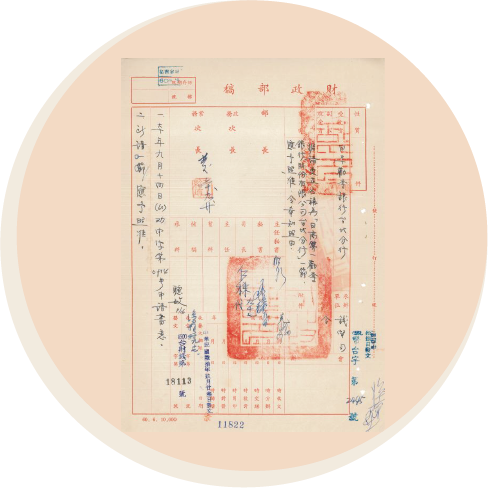
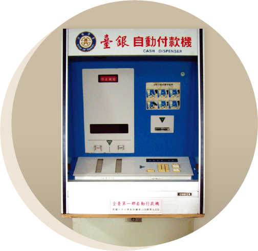

銀行大事紀
銀行大事紀
1946
戰後政府設立的第一家銀行
資料來源：Artnisen
土地銀行
資料來源：財政部財政史料陳列室
第一家辦理不動產與農業信用的專業銀行
1959
第一家外國銀行

日本勸業銀行更名核准函
資料來源：金融監督管理委員會金融史料陳列室
資料來源：金融監督管理委員會金融史料陳列室
第一家信託投資公司
中國信託發行台灣第一張信用卡
資料來源：中國信託銀行公共關係暨公益推展處
1974
第一張信用卡
1976
第一家提供中小企業融資與輔導的專業銀行
第一家票券金融公司
中興票券金融公司為台灣首家貨幣中介機構，提供活絡貨幣市場交易、促進經濟發展、協助產業升級的功能。
中興票券大樓
資料來源：文化部國家文化記憶庫
1977
第一部自動提款機
臺灣銀行引進台灣第一部自動提款機，提升金融服務便利性，可視為台灣金融業數位化進程的重要里程碑。
中國輸出入銀行開業典禮
資料來源：財政部財政史料陳列室
1979
唯一國營出口信用專業銀行
中國輸出入銀行為台灣唯一國營的出口信用專業銀行，辦理專業性的中長期輸出入融資、保證及輸出保險業務，其主要任務為配合國家經貿政策，協助廠商拓展外銷市場以及分擔貿易風險，促進我國產業升級與國際經濟合作發展。
1983
第一家國際金融業務分行（OBU）
中國國際商業銀行（兆豐銀行前身）成立了台灣第一家國際金融業務分行（OBU），之後國內國際金融業務分行陸續成立，加速推動台灣國際金融業務的發展。
1984
第一張聯合簽帳卡
由七家金融機構組成聯合簽帳卡處理中心，正式發行聯合簽帳卡。1988年此卡更名為聯合信用卡（具循環信用功能），並開始與國際信用卡機構合作，開啟台灣的信用卡市場。
聯合簽帳卡
資料來源：金管會金融史料陳列室

台灣第一部自動提款機
資料來源：財政部財政史料陳列室
1987
國內自動化提款機首度提供跨行「提領現金」及「查詢餘額」功能
我國第一台自動化櫃員機（ ATM） 早在1977年由臺灣銀行引進。1987 年全國 ATM 開始提供跨行「提領現金」及「查詢餘額」功能，大大提升了金融的便捷性。
1992
國內自動化提款機首度提供「跨行轉帳」服務功能
1999
電子銀行業務全面開放
2001
第一家金融控股公司設立
資料來源：富邦集團60週年紀念專刊
2015
第一家電子支付專營機構
2017
第一批綠色債券發行
全球第一個金融監理沙盒成立專法的國家
2020
第一家純網路銀行